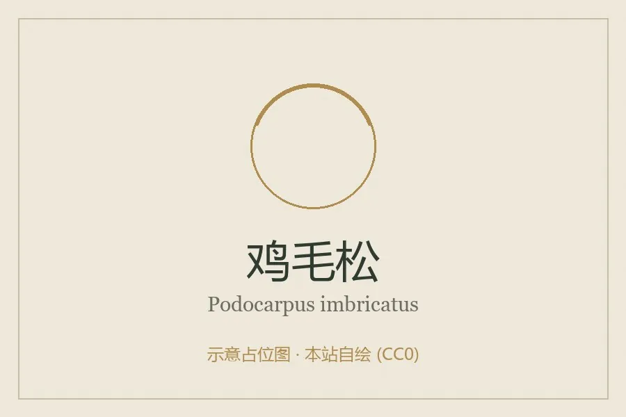

蕨类与裸子植物 · 植物界
鸡毛松 Podocarpus imbricatus

鸡毛松的叶小而密、如鸡毛般排列，是热带山地雨林中的高大乔木，木材优良，被列为国家二级重点保护植物。
- 分类
- 门裸子植物门纲松纲目罗汉松目科罗汉松科属罗汉松属
- 栖息环境
- 海拔 500–1500 m 的热带山地雨林，喜温暖湿润多云雾
- 地理分布
- 中国海南、云南、广西及东南亚地区
- 保护级别
- IUCN 暂无评估；中国国家二级重点保护野生植物
物种志
鸡毛松是罗汉松科常绿乔木，高可达 30 m，树干通直，树皮灰褐色。叶二型：幼树与侧枝上的叶钻形或线形，排列如鸡毛；老树主枝上的叶鳞形，贴生。雌雄异株，雄球花穗状，雌球花单生。种子核果状，生于肉质种托上，成熟时紫红色。
鸡毛松分布于中国海南、云南、广西等地的热带山地雨林，以及越南、缅甸、印度尼西亚等地，多生于海拔 500–1500 m 的山谷与山坡，喜温暖湿润、多云雾的环境。它树干高大通直，木材纹理直、材质优良，是重要的用材树种；因长期采伐和热带雨林破坏，野生资源减少，被列为中国国家二级重点保护野生植物。鸡毛松的叶形独特，幼树与老树叶差异明显，是罗汉松科中较特殊的种类。
形态与习性
- 树高可达 30 m
- 叶二型，幼树叶排列如鸡毛
- 种子核果状，生于肉质种托
- 木材纹理直，材质优良
- 保护国家二级重点保护野生植物
趣味知识
- 鸡毛松幼树的叶子小而密，排列像鸡毛，名字由此而来。
- 它的老树叶片变成鳞形，和幼树形态差别很大。
- 鸡毛松木材优良，因雨林破坏和采伐被列为国家二级保护植物。